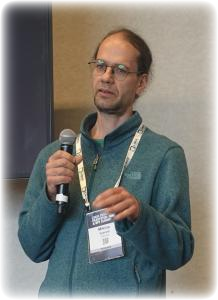

FUSE passthrough for file I/O
There are some filesystems that use the Filesystem in Userspace (FUSE) framework but only to provide a different view of an underlying filesystem, such as different file metadata, a changed directory hierarchy, or other changes of that sort. The read-only filtered filesystem, which simply filters the view of which files are available, is one example; the file data could come directly from the underlying filesystem, but currently needs to traverse the FUSE user-space server process. Finding a way to bypass the server, so that the file I/O operations go directly from the application to the underlying filesystem would be beneficial. In a filesystem session at the 2023 Linux Storage, Filesystem, Memory-Management and BPF Summit, Miklos Szeredi wanted to explore different options for adding such a mechanism, which was referred to as a "FUSE passthrough"—though "bypass" might be a better alternative.

The mechanism needs to establish a file mapping, so that the file descriptor used by the application connects to the file on the underlying filesystem, in order to bypass the FUSE server. There is a question of what the granularity of the file mapping should be, Szeredi said. It could simply be the whole file, or perhaps blocks or byte ranges. There is also a question about what is used to reference the underlying file; an open file descriptor passed in a FUSE message would work, but there is a security concern regarding that. One way around that restriction would be to create an ioctl() command to establish the mapping.
Filesystem-track organizer Amir Goldstein wondered why the ioctl() was needed. An attendee said that there were problems because programs can be tricked into doing a write() to the FUSE daemon using some, perhaps privileged, file descriptor, but that it is much harder to trick a program into doing a particular ioctl() command. Christian Brauner said that the seccomp notifier API uses ioctl() commands for the same reason.
There was some discussion around why the problem being solved here was not more widespread, without reaching much of a clear conclusion; adopting the ioctl() mechanism seems prudent, at least for now. This email from Jann Horn, which Szeredi referenced when he suggested the topic, may shed further light on the problem. This was followed by some ... rather hard to follow ... discussion of a grab bag of different things that needed to be worked out, including the lifetime of the mapping and whether different user namespaces would create complications. "Namespaces are horrible", David Howells said.
There are several potential solutions for ways to bypass the FUSE server for reads and writes so that those can go directly to the underlying filesystem. The most recent of those solutions is fuse-bpf, which has a wider scope but could perhaps provide the needed functionality. Its developer, Daniel Rosenberg, was on hand to describe how that filesystem might fit into the picture. Another fuse-bpf session was held on the last day of LSFMM+BPF, as a combined filesystem and BPF session, coverage of which will be coming in due course.
One goal of the fuse-bpf effort is to be as easy to use as FUSE is, Rosenberg said. There is a set of calls that is "mirroring what the FUSE user-space calls would be doing". There are two hooks available for adding BPF filtering both before and after the filesystem operation is performed. The pre-filter allows changing some of the input parameters to the operation, while the post-filter can change the output data and error code.
Howells asked if fuse-bpf could be tricked to run arbitrary BPF programs, perhaps even from remote sources. Rosenberg said that the BPF programs have to be registered with FUSE ahead of time. "This is no more dangerous than any other BPF", an attendee said, to general laughter.
There was some discussion of how fuse-bpf could be used for passthrough, but the read and write paths for that are not yet fully implemented, Rosenberg said. Beyond the BPF filters, there are also regular FUSE filters that can be applied; those might be used to prototype a BPF filter, to filter on more arguments than the BPF filters currently support, or to perform some operation that the BPF verifier will reject. With a grin, he asked if there were "any questions about this thing that I have not fully explained until Wednesday", referring to his upcoming talk. It was agreed that the ordering of the sessions was a tad unfortunate, but that a more cohesive overview of fuse-bpf would be forthcoming.
| Index entries for this article | |
|---|---|
| Kernel | Filesystems/In user space |
| Conference | Storage, Filesystem, Memory-Management and BPF Summit/2023 |
Posted May 31, 2023 11:37 UTC (Wed)
by Rudd-O (guest, #61155)
[Link]
FUSE passthrough for file I/O